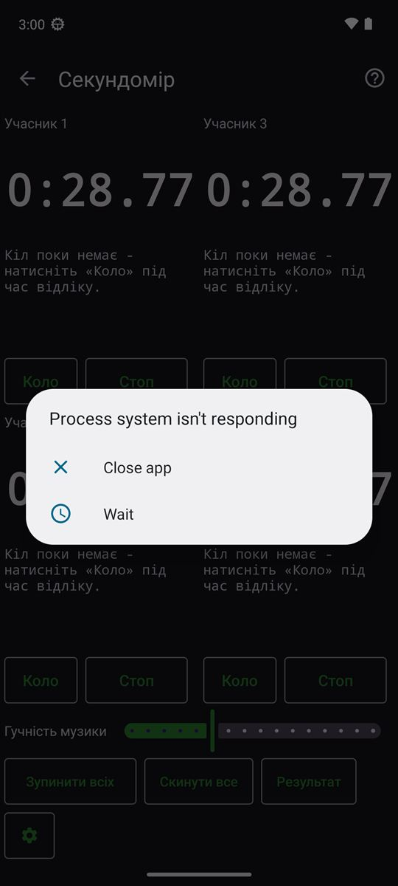
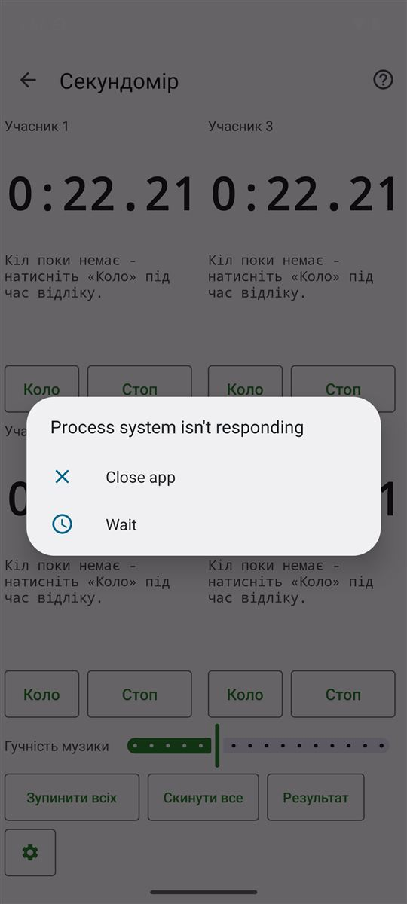

Довідка про вікно
Результат секундоміра
Це вікно відкривається з екрана секундоміра кнопкою Результат. За бажанням додайте опис і нотатку, перевірте попередній перегляд, потім збережіть текст у файл або надішліть його; Скасувати чи «Назад» повертає до секундоміра.


У такому порядку
- Впишіть опис 1 і, якщо хочете, нотатку 2. Обидва поля необов’язкові, а порожнє поле в текст не потрапляє.
- Прочитайте попередній перегляд 3. Це той самий текст, який буде збережено або надіслано, тож виправляйте поля вище, доки він не стане таким, як треба.
- Натисніть 4, щоб записати текст у файл у теці «Завантаження», або 5, щоб передати його іншому застосунку через системне меню «Поділитися».
- Натисніть Скасувати, «Назад» або Esc, щоб закрити вікно, нічого не зберігаючи й не надсилаючи; секундомір лишається, як був.
Елементи
1ОписРядок-заголовок результату (необов’язковий).
Рядок на початку тексту, наприклад назва забігу. Якщо поле порожнє, у текст він не потрапляє.
- Навіщо
- Він каже тому, хто прочитає текст, що саме вимірювали.
- Що далі
- Попередній перегляд показує його одразу.
- Чи можна скасувати
- Так, змініть або очистьте поле; із вікна нічого не йде, доки ви не збережете чи не надішлете.
Набране лишається, якщо повернути телефон.
2НотаткаДодаткове зауваження (необов’язкове).
Другий рядок під описом, наприклад зауваження про забіг. Якщо поле порожнє, у текст він не потрапляє.
- Навіщо
- Згодиться для всього, про що самі часи не кажуть.
- Що далі
- Попередній перегляд показує його одразу.
- Чи можна скасувати
- Так, змініть або очистьте поле; із вікна нічого не йде, доки ви не збережете чи не надішлете.
3Попередній переглядТочний текст, який буде збережено або надіслано.
Показує опис і нотатку, рядок з датою та часом заміру, а далі по рядку на кожного учасника: загальний час і часи кіл у порядку запису.
- Навіщо
- Прочитайте його перед збереженням чи надсиланням: те, що ви бачите, і піде з вікна.
- Що далі
- Він іде слідом за тим, що ви вводите у двох полях вище. Часи - на мить відкриття цього вікна, навіть якщо секундомір за ним ще йде.
Текст у попередньому перегляді можна виділити й скопіювати.
4Зберегти у файлЗберігає текст файлом у «Завантаження».
Записує попередній перегляд простим текстовим файлом у теку «Завантаження»; ім’я файлу починається з Tourist_stopwatch і містить дату та час.
- Навіщо
- Потрібно, щоб зберегти запис про забіг на телефоні.
- Що далі
- Вікно закривається, а коротке повідомлення називає збережений файл або повідомляє, що зберегти не вдалося.
- Чи можна скасувати
- Повторне збереження створює ще один файл. Непотрібний файл лишається в «Завантаженнях», доки ви самі його не видалите.
- Клавіша
- Enter на підключеній клавіатурі зберігає, якщо фокус не стоїть на якійсь кнопці вікна.
5ПоділитисяПередає текст іншому застосунку.
Відкриває системне меню «Поділитися» з попереднім переглядом у вигляді тексту; там ви обираєте, який застосунок його отримає. Текст іде далі, лише коли ви оберете застосунок.
- Навіщо
- Потрібно, щоб одразу передати часи, не зберігаючи файл.
- Що далі
- Вікно закривається, відкривається системне меню, і далі текст опиняється в руках обраного застосунку.
- Чи можна скасувати
- Якщо закрити системне меню, нічого не обравши, нічого не піде; текст, уже надісланий з іншого застосунку, звідси не повернути.
6Довідка (F1)Відкриває цю сторінку.
Знак питання в заголовку вікна відкриває цю сторінку.
- Навіщо
- Вона пояснює вікно з малюнком, не виходячи із застосунку й без мережі.
- Що далі
- «Назад» закриває довідку й повертає до цього вікна.
- Клавіша
- F1 на підключеній клавіатурі робить те саме.